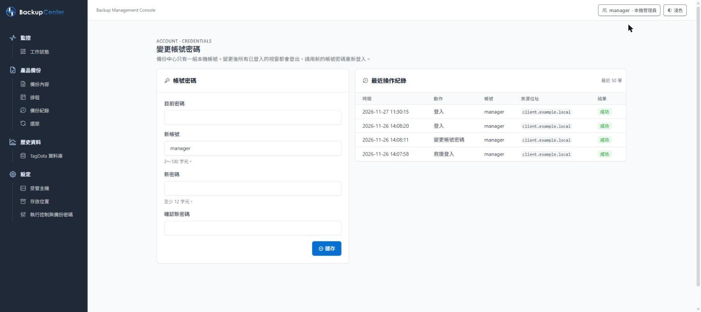

帳號
備份中心只有一組本機帳號。在這裡變更帳號與密碼，並查看最近的登入與帳號操作紀錄。
變更帳號密碼

- 按右上角帳號名稱，選「變更帳號密碼」。
- 輸入「目前密碼」、「新帳號」（3～100 字元）、「新密碼」（至少 12 字元）與「確認新密碼」。
- 按「儲存」，再用新的帳號密碼重新登入。
新帳密生效，其他瀏覽器的登入全部失效。
失敗時先查
- 顯示「兩次輸入的新密碼不一致」：重新輸入確認新密碼。
- 忘記目前密碼：改用救援登入（第 1 章）。
查看最近操作紀錄
- 時間／動作／帳號
- 登入、救援登入、變更帳號密碼等動作與帳號。
- 來源位址
- 操作來自哪個位址。
- 結果
- 成功，或失敗與原因。
- 在右邊表格查看最近 50 筆紀錄。
可以確認是否有不明的登入或失敗嘗試。
失敗時先查
- 看到大量失敗：同一來源連續 5 次失敗會鎖 5 分鐘；如非本人操作，請立即變更密碼。